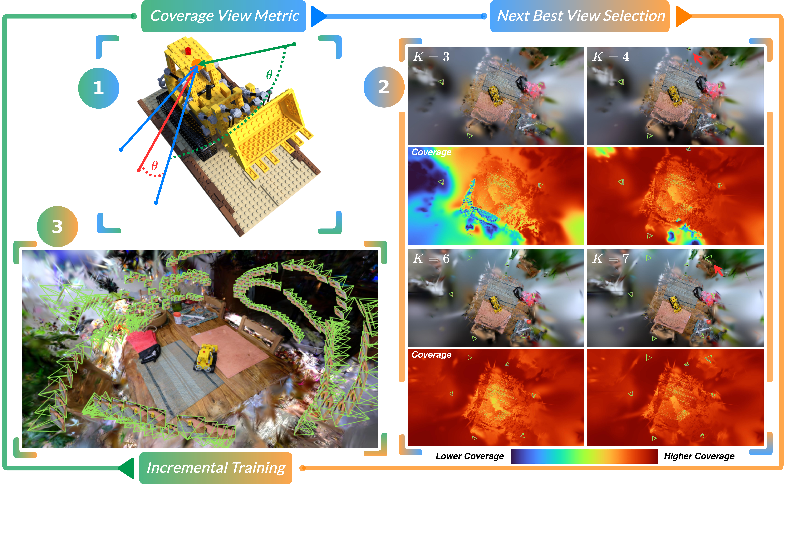
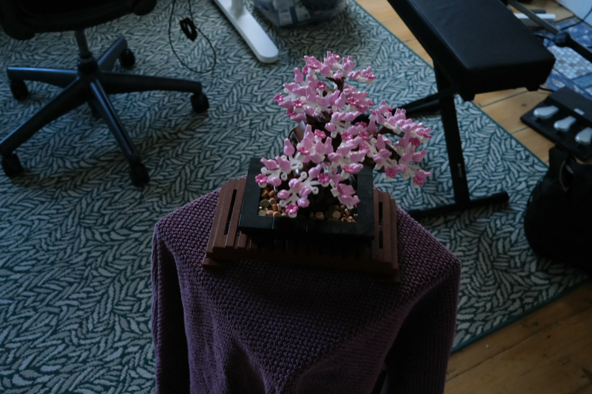
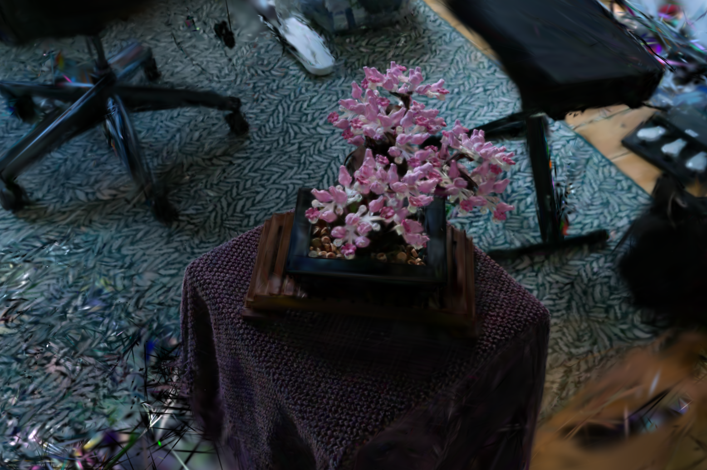
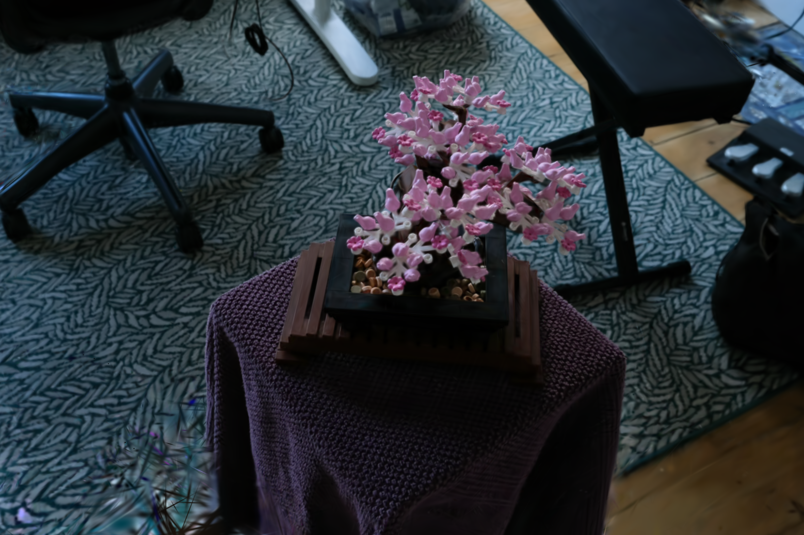

What makes a good viewpoint? The quality of the data used to learn 3D reconstructions is crucial for enabling efficient and accurate scene modeling. We study the active view selection problem and develop a principled analysis that yields a simple and interpretable criterion for selecting informative camera poses. Our key insight is that informative views can be obtained by minimizing a tractable approximation of the Fisher Information Gain, which reduces to favoring viewpoints that cover geometry that has been insufficiently observed by past cameras. This leads to a lightweight coverage-based view selection metric that avoids expensive transmittance estimation, is robust to noise and training dynamics, and can be rendered at 85 FPS. We call our pipeline COVER (Camera Optimization for View Exploration and Reconstruction). We integrate our method into the Nerfstudio framework and evaluate it on real datasets within fixed and embodied data acquisition scenarios. Across multiple datasets and radiance-field baselines, our method consistently improves reconstruction quality compared to state-of-the-art active view selection methods.
Humans naturally collect sequential image datasets that facilitate 3D reconstruction. This observation suggests that there exists a natural interpretation to the information gain problem. We make this explicit by showing close connections between Fisher Information Gain and coverage.
COVER consistently outperforms FisherRF and random selection across 15 real scenes in PSNR, SSIM, and LPIPS—both on human-captured datasets that already have good natural coverage, and in embodied scenarios where the camera can only move within a limited vicinity under a fixed time budget.
Yes. COVER abstracts away transmittance effects, relying only on Gaussian projection onto the image plane—no rasterization required.
The coverage metric renders at 85 FPS (including color), enabling real-time visualization. Under a fixed time budget, this speed facilitates more comprehensive search and scalable view selection.

COVER operates in three stages:
We benchmark COVER against FisherRF and a random baseline across 15 real scenes from the Tanks and Temples, MipNeRF360, and custom captured datasets. Each scene is seeded with 10 initial views, and a new view is selected every 200 gradient steps during training. COVER consistently outperforms all feasible baselines in PSNR, SSIM, and LPIPS, and in some scenes approaches the performance of Splatfacto trained with all views. Use the sliders below to compare renders from evaluation viewpoints not seen during training.
COVER vs Ground Truth

FisherRF vs Ground Truth

Random vs Ground Truth

@inproceedings{chen2026cover,
author = {Timothy Chen and Adam Dai and Maximilian Adang and Grace Gao and Mac Schwager},
title = {Coverage Optimization for Camera View Selection},
booktitle = {Proceedings of the IEEE/CVF Conference on Computer Vision and Pattern Recognition (CVPR)},
year = {2026}
}